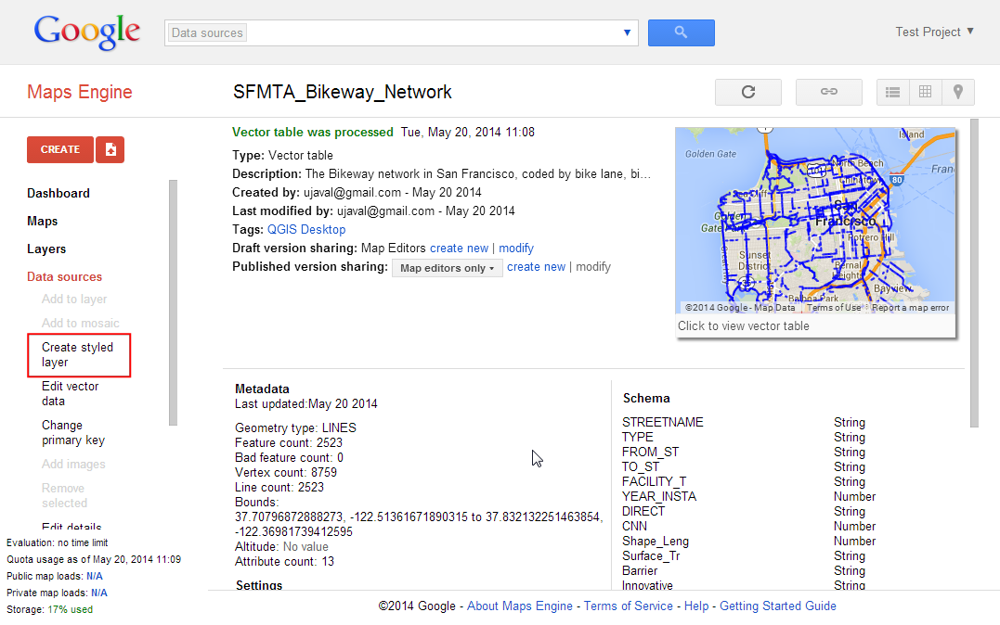

Отбор проб растровых данных с помощью точек или полигонов
Многие научные и экологические наборы данных существуют в виде растров с географической привязкой. Данные рельефа (ЦМР) также предоставляются в виде растровых файлов. В этих растровых файлах представляемый параметр кодируется в значения пикселей растра. Часто бывает необходимо извлечь значения пикселей в определенных местах или агрегировать их на какой-то области. Эта функция доступна в QGIS с помощью двух модулей: Point Sampling Tool и Zonal Statistics plugin.
Обзор задачи
Given a raster grid of maximum temperature in the US, we need to extract the
temperature at all urban areas and also calculate the average temperature for
each county in the US.
Методика
- Go to and browse to the
downloaded
us.tmax_nohads_ll_{YYYYMMDD}_float.tif file and click
Open.

- Once the layer is loaded, select the Identify tool and click
anywhere on the layer. You will see the temperature value in celsius as the
value or Band 1 at that location.

- Now unzip the downloaded
2013_Gaz_ua_national.zip file and extract the
2013_Gaz_ua_national.txt file on your disk. Go to .

- In the Create a Layer from Delimited Text File dialog, click
Browse and open
2013_Gaz_ua_national.txt. Choose
Tab under Custom delimiters. The point coordinates
are in Latitude and Longitude, so select INTPTLONG as
X field and INTPTLAT as Y field. Check
the Use spatial index box and click OK.

- Now we are ready to extract the temperature values from the raster layer.
Install the
Point Sampling Tool plugin. See Использование модулей расширения for
details on how to install plugins.

- Open the plugin dialog from .

- In the Point Sampling Tool dialog, select
2013_Gaz_ua_national as the Layer containing sampling
points. We must explicitely pick the fields from the input layer that we
want in the output layer. Choose GEOID and NAME fields from the
2013_Gaz_ua_national layer. We can sample values from multiple raster
band at once, but since our raster has only 1 band, choose the
us.tmax_nohads_ll_{YYYYMMDD}_float: Band 1. Name the output vector layer
as max_temparature_at_urban_locations.shp. Click the OK to
start the sampling process. Click Close once the process
finishes.

- You will see a new layer
max_temparature_at_urban_locations loaded in
QGIS. Use the Identify tool to click on any point to see the
attributes. You will see the us.tmax_no field - which contains the
raster pixel value at the location of the point.

- First part of our analysis is over. Let’s remove the unnecessary layers. Hold
the
Shift key and select max_temparature_at_urban_locations and
2013_Gaz_ua_national layers. Right-click and select Remove
to remove them from QGIS TOC.

- Go to . Browse to the downloaded
tl_2013_us_county.zip file and click Open. Select the
tl_2013_us_county.shp as the layer and click OK.

- The
tl_2013_us_county will be added to QGIS. This layer is in
EPSG:4269 NAD83 projection. This doesn’t match the projection of the
raster layer. We will re-project this layer to EPSG:4326 WGS84
projection.

- Right-click the
tl_2013_us_county layer and select Save
As...

- In the Save Vector layer as.. dialog, click Browse
and name the output file as
counties.shp. Choose Selected
CRS from the CRS dropdown menu. Click Browse and
select WGS 84 as the CRS. Check the Add saved file to map
and click OK.

- A new layer named
counties will be add to QGIS.

- Enable the
Zonal Statistics Plugins. This is a core plugin so it is
already installed. See Использование модулей расширения to know to how enable core
plugins.

- Go to .

- Select
us.tmax_nohads_ll_{YYYYMMDD}_float as the Raster
layer and counties as the Polygon layer containing the
zones. Enter ZS_ as the Output column prefix. Click
OK.

- The analysis may take some time depending on the size of the dataset.

- Once the processing finishes, select the
counties layer. Use the
Identify tool and click on any county polygon. You will see
three new attributes added to the layer: ZS_count, ZS_mean and
ZS_sum. These attributes contain the count of raster pixels, mean of
raster pixel values and sum of raster pixel values respectively. Since we
are interested in average temperature, the ZS_mean field will be the
one to use.

- Let’s style this layer to create a temperature map. Right-click the
counties layer and select Properties.

- Switch to the Style tab. Choose Graduated style and
select
ZS_mean as the Column. Choose a Color
Ramp and Mode of your chose. Click Classify to
create the classes. Click OK. (See Основная стилизация векторного слоя
for more details on styling.)

- You will see the county polygons styled using average maximum temperature
extracted from the raster grid.